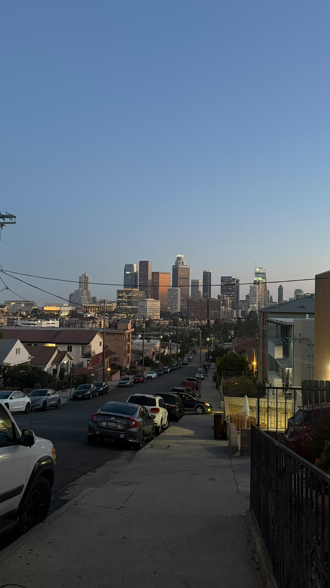
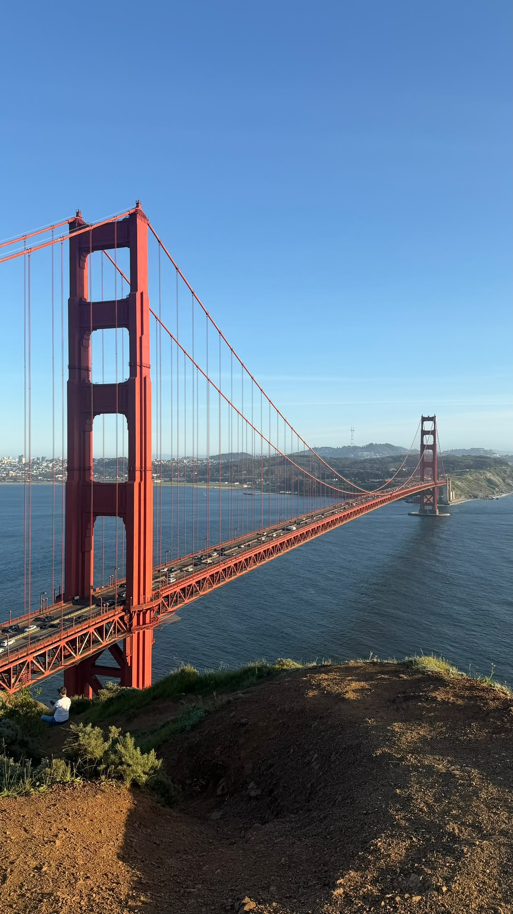

Places I Love
California is one of my favorite places because of its beautiful beaches, cities, and ocean views. These are three places that I especially enjoy.
- Los Angeles
- Manhattan Beach
- San Francisco
My Favorite California Destinations

Los Angeles is one of my favorite cities in California. I like the city views and the many different places to visit.
Manhattan Beach is one of my favorite beaches in California. I love the ocean and the beautiful sunsets.

San Francisco is another favorite place of mine. I especially like the Golden Gate Bridge.
Learn More About California
California has many amazing places to visit. You can learn more about California and its destinations on the official tourism website.
Visit California